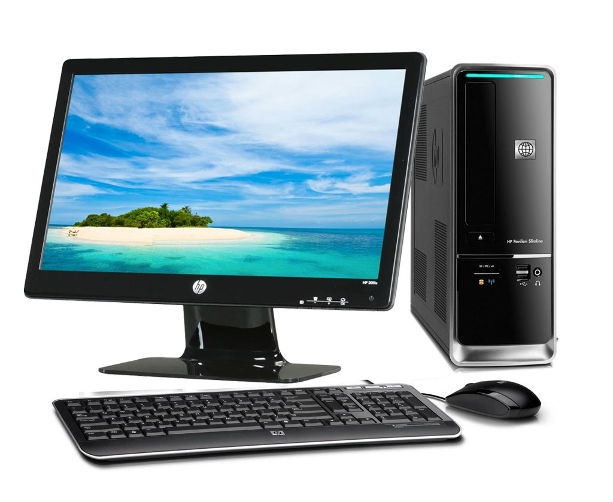

La computadora y sus partes
¿Que es la computadora?
Es un dispositivo informatico que es capaz de recibir, almacenar y procesar informacion
de una forma util.

La enorme cantida de componentes de una computadora pueden agruparse en dos categorias separadas, que son:
- Harware:
La parte fisica de un ordenador o sistema informatico. Esta formado por las
componentes electricos, electronicos,electronomecanicos y mecanicos, tales como circuitos de cables y luz, placas, memorias, discos duros, dispositivos
perifericos y cualquier otro material en estado fisico que sea necesario para hacer que el equipo funcione.
- software
es un termino informatico que hace referencia a un programa o conjunto de programas de
computo, asi como datos, procedimientos y pautas que permiten realizar distintas tareas en un sistema informatico.

Hardware
- Procesador:
Es el componente mas importante dentro del pc. Es el cerebro de todo el funcionamiento
del sistema, el encargadode dirigir todas las tareas que lleva a cabo el equipo y de ejecutar el codigo de los diferentes programas.
- Memoria Ram
Es la memoria de la computadora que almacena la informacion que un programa necesita
mientras se ejecuta.

- Tarjeta madre:
Es una tarjeta de circuito impreso a la que se conectan los componentes que
constituyen la computadora.
- Disco duro:
Es un tipo duro de tecnologia que almacena el sistema operativo, las aplicaciones
y los archivos de datos que su computadora usa para un funcionamiento normal.

- Monitor:
Muestra la informacion de tu equipo como imagenes y textos, que son generados gracias a una
tarjeta de video que se encuentra en el interior de la torre del computador.
Software
- Software de aplicacion:
Nos permite realizar todo tipo de tareas, ya sean laborales, de entretenimiento,
de diseño grafico, para navegar por internet,etc.